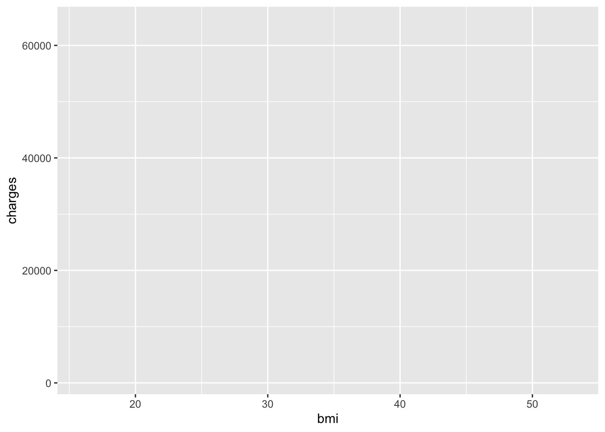
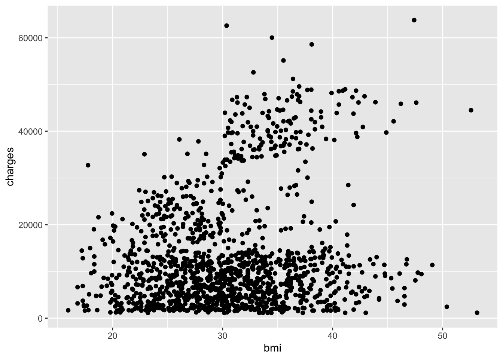
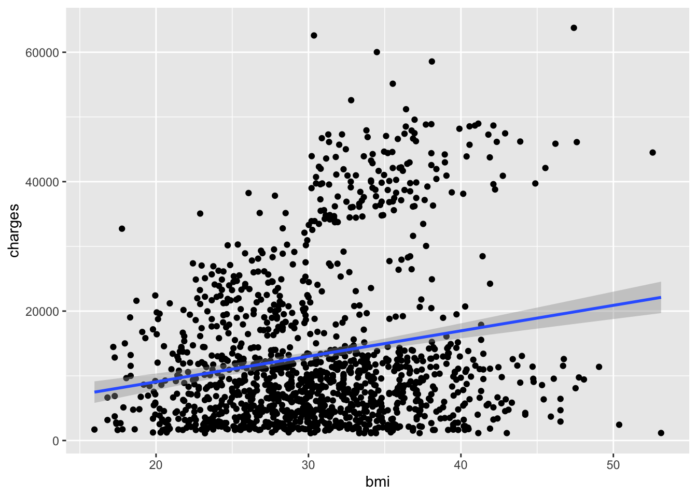
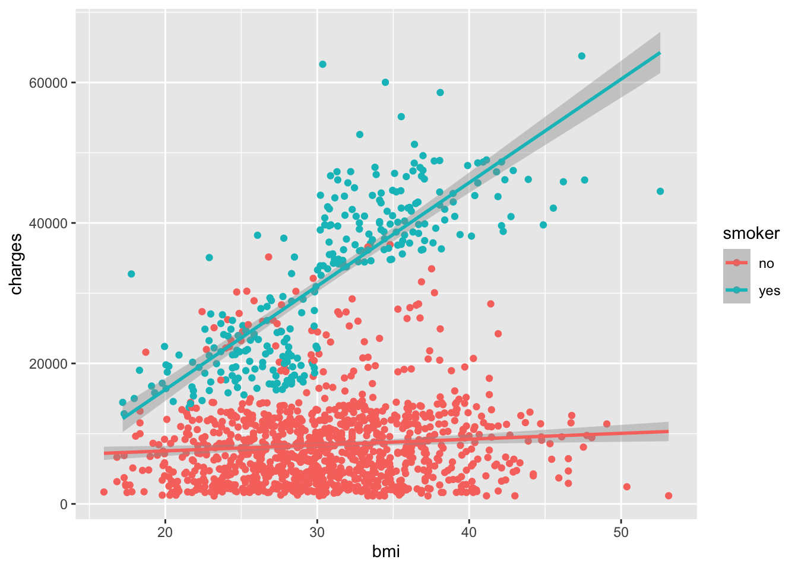
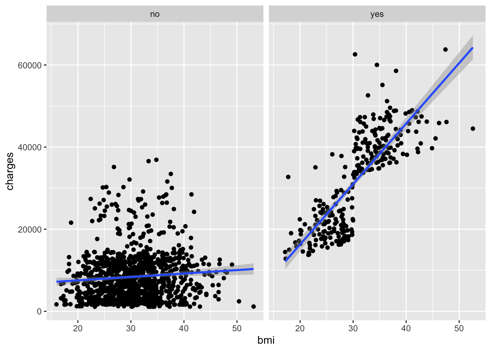
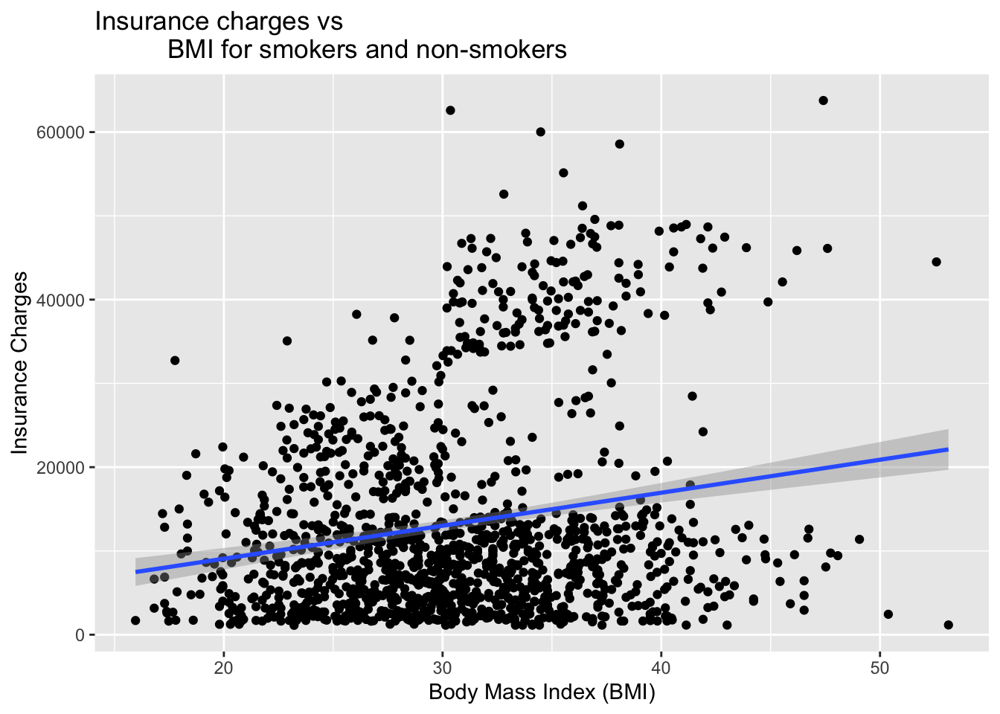
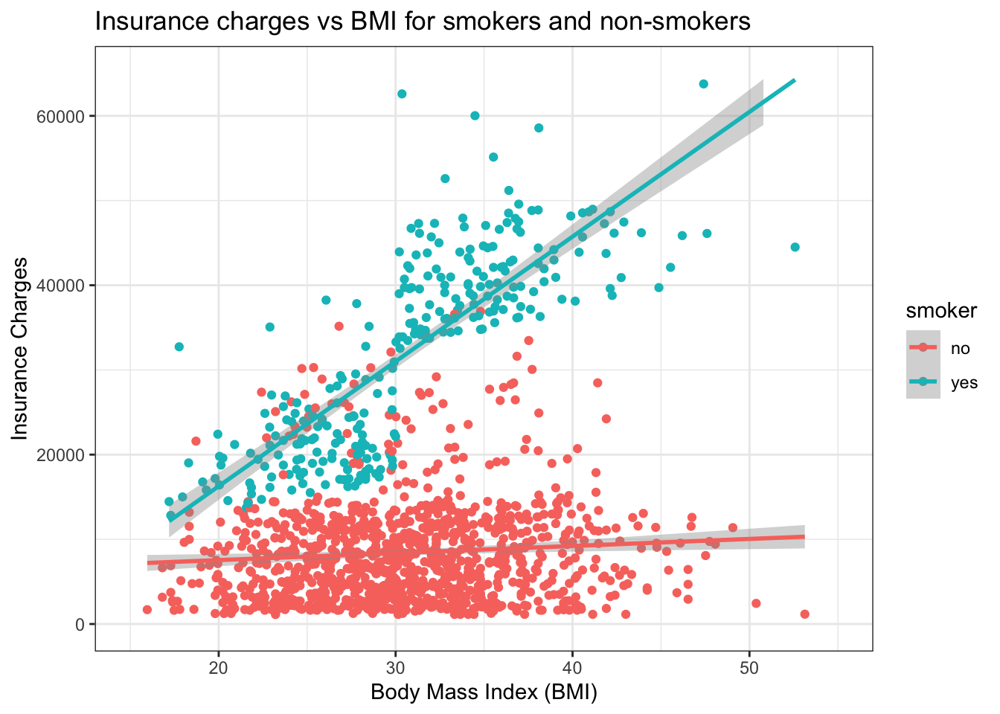
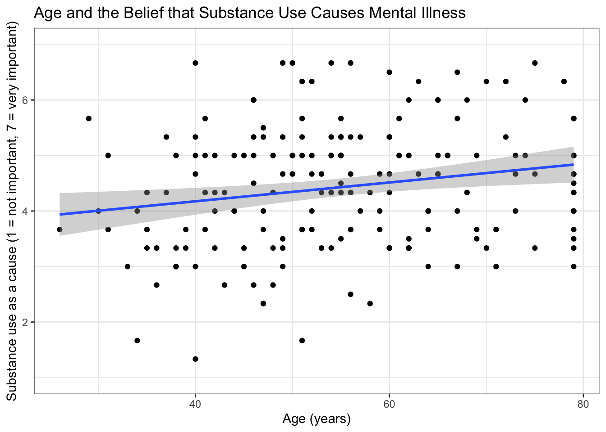
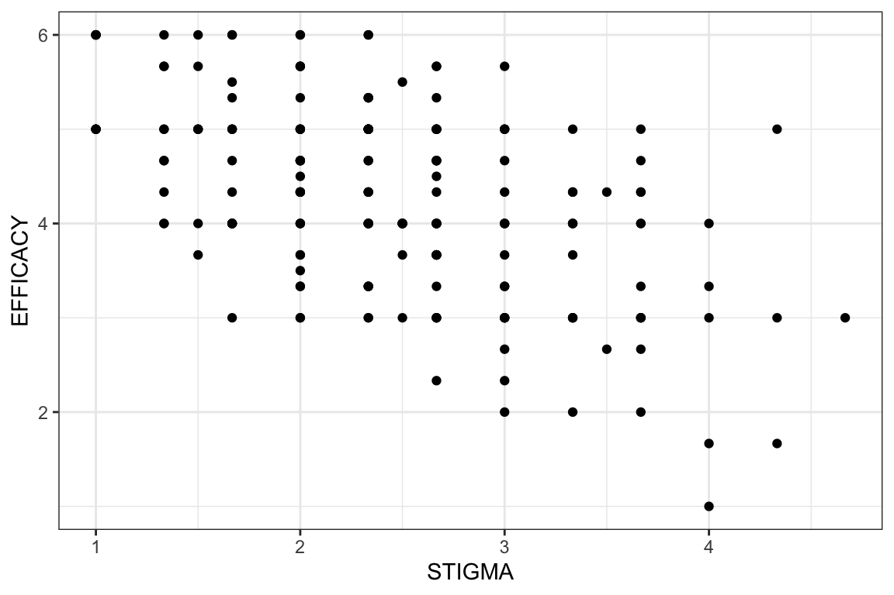
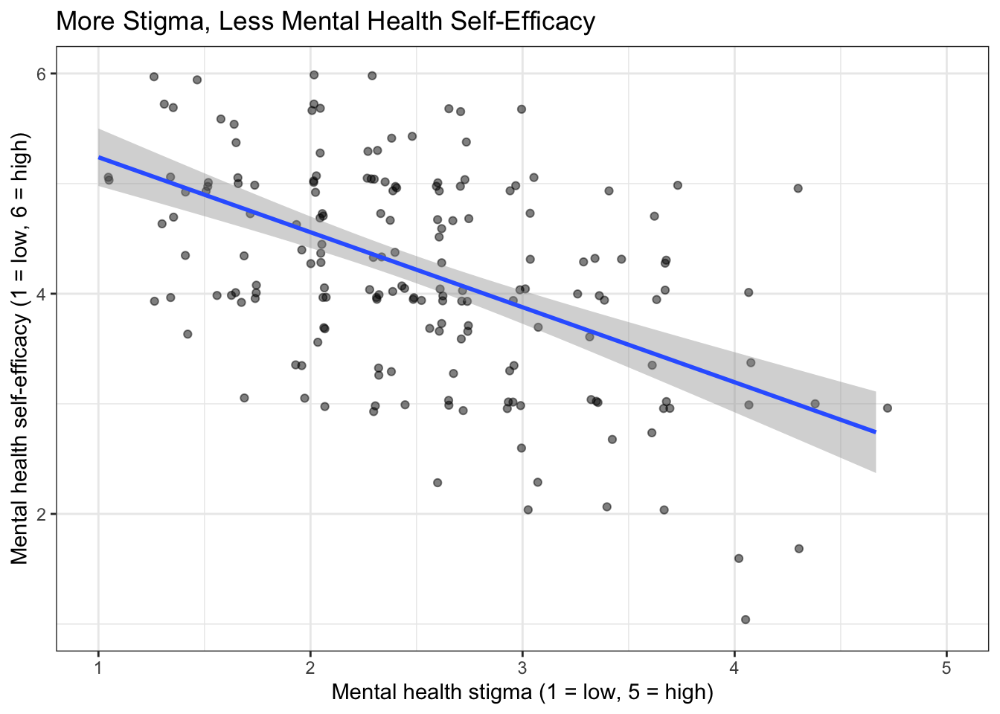

insurance <- read.csv("data/insurance.csv")19 Visualize a Relationship
How to build scatterplots to show how two scores go together
Abstract
This chapter teaches researchers to visualize relationship research questions, which examine how two continuous scores go together. Using real insurance data, researchers build a scatterplot one layer at a time: data, mapping, points, a line of best fit, grouping with color or facets, labels, a theme, and axis scales. In The Lab, researchers make a scatterplot with the lab dataset and then learn what to do when survey scores stack on top of each other: jitter the points and say so in the figure caption. In Your Turn, researchers use a copy-ready template and a checklist to build the relationship plot for their own research question.
Keywords
ggplot2, scatterplot, line of best fit, jitter, relationship
ResourcesResources:
ggplot2
19.1 How This Chapter Works
You will go through this chapter three times, with three different datasets.
| Pass | Section | Dataset | What you do |
|---|---|---|---|
| 1 | The Play | insurance (example) |
Watch the play. Read the code and the output, step by step. |
| 2 | The Lab | lab dataset | Run the play. Make two scatterplots yourself during the R Lab, then check your own work. Labs are not graded. |
| 3 | Your Turn | your team’s dataset | Call your own play. After you finish all of the R Labs, come back and make the plot for your own research question. |
GoGo: Know your route first
This chapter is the Visualize step on The Analysis Map for a relationship question: two continuous scores. New to ggplot2 layers? Read How Code Builds a Plot first.
19.2 📋 The Play
19.2.1 Example Data: insurance
The example dataset is from the “Medical Cost Personal Costs” database on Kaggle. For this chapter, we refer to it as insurance.
library(ggplot2)19.2.2 Relationship Research
For relationship research, the variables are 📏 Continuous because they range along a continuum, such as a scale for beliefs from 1 (strongly disagree) to 6 (strongly agree). To examine the relationship between two continous variables, use the steps below to build a custom scatterplot.
STEP-BY-STEP TO BUILD A SCATTERPLOT
Step 1: Set up data
ggplot(data = insurance)
Step 2: Set up mapping
What is the relationship between BMI and insurance charges?
ggplot(data = insurance,
mapping = aes(
x = bmi,
y = charges))
Resources📊 Layer: Data + Mapping
Two layers are used:
- Data:
insurancedataset - Mapping:
aes(x = bmi, y = charges)
Step 3: Add geometry (points)
Add points to create a scatterplot using geom_point():
ggplot(data = insurance,
mapping = aes(
x = bmi,
y = charges)) + geom_point()
Resources🎨 Layer: Geometries
- Geometry:
geom_point()displays data as points
CautionCaution: Don’t start a line with
+
Layers are joined with a + at the end of a line. If a line starts with +, R runs the plot without that layer and then gives you an error. Look at the code above: the + comes right before geom_point(), on the same line as the layer before it.
Step 4: Add a statistical layer (trend line)
Add a linear model line with geom_smooth():
ggplot(data = insurance,
mapping = aes(
x = bmi,
y = charges)) + geom_point() +
geom_smooth(method = "lm")
Resources📈 Layer: Statistics
- Statistics:
geom_smooth()calculates and displays a trend line
Notice how it looks like we have two different populations? Let’s explore this further.
Step 5. Incorporate grouping (color)
If you have three variables (2 continouous, 1 categorical/grouping variable), then you can use facets. There are two main approaches to visualizing grouping variables:
Method 1: Using Color
Map the smoker variable to color:
ggplot(data = insurance,
mapping = aes(
x = bmi,
y = charges,
color = smoker)) +
geom_point() +
geom_smooth(method = "lm")
GoGo: Put a variable inside
aes()
color = smoker is inside aes() because smoker is a variable in the dataset. If you want every point to be one color, put the color outside aes(), like this: geom_point(color = "#005a43").
Resources🔵 Layer: Facet (extended)
- Facet: Added
color = smokerto group by smoking status
Method 2: Using Facets
Create separate panels for each group with facet_wrap():
ggplot(data = insurance,
mapping = aes(
x = bmi,
y = charges)) +
geom_point() +
geom_smooth(method = "lm") +
facet_wrap(~smoker)
Resources📊 Layer: Facets
- Facets:
facet_wrap(~smoker)creates separate panels
Both methods reveal that smoking status significantly affects the relationship between BMI and insurance charges!
Step 6. Customize Appearance
Adding Titles and Labels
Make your plot more informative with descriptive titles:
ggplot(data = insurance,
mapping = aes(
x = bmi,
y = charges)) +
geom_point() +
geom_smooth(method = "lm") +
ggtitle("Insurance charges vs
BMI for smokers and non-smokers") +
xlab("Body Mass Index (BMI)") +
ylab("Insurance Charges")
Changing the Theme
Apply a professional theme with theme_bw():
ggplot(data = insurance, mapping = aes(x = bmi, y = charges, color = smoker)) +
geom_point() +
geom_smooth(method = "lm") +
ggtitle("Insurance charges vs
BMI for smokers and non-smokers") +
xlab("Body Mass Index (BMI)") +
ylab("Insurance Charges") +
theme_bw()
Resources🎨 Layer: Theme
- Theme:
theme_bw()controls the overall visual appearance
ImportantRequired for Team Poster: pick one theme for your team
Team members should pick one theme (from the complete themes) to use with all plots in your individual reports and the team poster!
Adjusting Axis Scales
Sometimes, you need to manually control the range of your axes for better visualization or to match other plots or to capture the entire range of the possible response options (e.g., 1-6, 1-10, 1 - 100).
Set specific limits with xlim() and ylim().
ggplot(data = insurance,
mapping = aes(x = bmi, y = charges, color = smoker)) +
geom_point() +
geom_smooth(method = "lm") +
xlim(15, 55) + # Set x-axis from 15 to 55
ylim(0, 65000) + # Set y-axis from 0 to 65000
ggtitle("Insurance charges vs BMI for smokers and non-smokers") +
xlab("Body Mass Index (BMI)") +
ylab("Insurance Charges") +
theme_bw()
Resources📏 Layer: Scales
- Scales:
xlim()andylim()control axis ranges
CautionCaution: Data outside the limits will be removed
Using xlim() and ylim() removes any data points outside the specified range. This can affect trend lines!
ImportantRequired: x and y axes cover the full scale
If your response options range from 1 to 6. Use ylim( ) to adjust the y-axis to range from 1 to 6 too.
GoGo: Save your plot with
ggsave()
Every plot in your RD Report and Final Report must be saved with ggsave(), so you can add it to your team poster. Save the plot to an object, then add two lines:
ggsave("plots/plot1_clear_name.png",
plot = plot_name, width = 10, height = 8, dpi = 300)The full explanation is in How Code Builds a Plot.
19.3 🏈 The Lab
You watched the play above with the insurance dataset (Pass 1). Now run two plays yourself with the lab dataset, a survey about what people believe about mental health.

Ref’s kickoff. This lab is not graded, so I am here to help you check your own work. Try each play before you open my check or the solution. If your answer does not match, that is not a penalty. It is how you find out what to fix.
| Lab play | What is new |
|---|---|
| Screen Left | a scatterplot, just like the play above |
| Screen Right | points that stack on top of each other, and how to jitter them |
Before you start
- Open your RStudio Project and your lab
.qmdfile. - Load the clean lab data by running this chunk. It runs the cleaning script you built in the earlier labs.
source("lab_prep.R") # creates mh_clean
nrow(mh_clean) # how many people are in the clean dataset?
Go Ref’s check: how many rows?
Ref’s check: how many rows?
nrow(mh_clean) should be 188. If you get 200, you are looking at the raw data: the duplicate response and the people who failed the attention checks have not been removed yet.
19.3.1 Lab Play 1: Screen Left (a scatterplot)
Research question: Is age (AGE) related to the belief that substance use causes mental illness (MIAQ_SUBSTANCE, 1 to 7)?
Your task: Go back to the scatterplot play and rebuild it for this question. Put AGE on the x axis and MIAQ_SUBSTANCE on the y axis, use geom_point(), add a line of best fit, label both axes in plain words, add a title, and use theme_bw().
Go Ref’s check: what should the plot look like?
Ref’s check: what should the plot look like?
- Your plot should include 186 people. R will warn you that it removed 2 rows with missing values (two people typed an impossible age). That warning is expected.
- The line of best fit should slope gently upward, and the dots should be spread widely around it. This is what a weak relationship looks like (r = 0.20). Most relationships in survey research look more like this than like a tight line.
- You can see almost every person as a separate dot, because
AGEcan take many different values.
Resources👀 See the solution
plot_age_substance <- ggplot(
data = mh_clean,
mapping = aes(
x = AGE,
y = MIAQ_SUBSTANCE)) +
geom_point() +
geom_smooth(method = "lm") +
ylim(1, 7) +
ggtitle("Age and the Belief that Substance Use Causes Mental Illness") +
xlab("Age (years)") +
ylab("Substance use as a cause (1 = not important, 7 = very important)") +
theme_bw()
print(plot_age_substance)
19.3.2 Lab Play 2: Screen Right (a scatterplot with stacked points)
Research question: Is mental health stigma (STIGMA, 1 to 5) related to mental health self-efficacy (EFFICACY, 1 to 6)?
Your task, part 1: Make the same kind of scatterplot as Lab Play 1, with STIGMA on the x axis and EFFICACY on the y axis. Use geom_point(). Then count the dots. Does it look like 188 people?

Caution Foul: stacked points
Foul: stacked points
Foul: stacked points
EFFICACY is the average of three survey items on a 6-point scale, so it can only take a few values (1, 1.33, 1.67, 2, and so on). STIGMA is the same kind of variable. When two people have the same two scores, geom_point() draws one dot on top of the other, and your plot hides most of your sample. This happens with almost every survey scale, so check for it every time.
Your task, part 2: Fix it. Replace geom_point() with geom_jitter(). Jitter nudges each dot a tiny random distance so that stacked dots separate. Adding alpha = 0.5 makes the dots see-through, so darker areas show where more people are.
geom_jitter(width = 0.08, height = 0.08, alpha = 0.5) +
CautionCaution: Jitter a little, and say that you did
Jitter only moves the dots in the picture. It does not change your data or your line of best fit. Keep width and height small (less than half the distance between two possible scores), and tell your reader in the figure caption that the points are jittered.
Go Ref’s check: how many dots can you see?
Ref’s check: how many dots can you see?
- There are 188 people in this plot, but with
geom_point()you can only see 92 dots. The biggest stack has 7 people on a single dot. - After you switch to
geom_jitter(), you should see small clouds of dots where the single dots used to be. Your dots will not be in exactly the same places as the solution, because jitter is random. That is fine. - The line of best fit should slope downward: people who report more stigma report less self-efficacy (r = -0.53). The line is the same with or without jitter.
Resources👀 See the solution
plot_stigma_efficacy <- ggplot(
data = mh_clean,
mapping = aes(
x = STIGMA,
y = EFFICACY)) +
geom_jitter(width = 0.08, height = 0.08, alpha = 0.5) +
geom_smooth(method = "lm") +
xlim(1, 5) +
ylim(1, 6) +
ggtitle("More Stigma, Less Mental Health Self-Efficacy") +
xlab("Mental health stigma (1 = low, 5 = high)") +
ylab("Mental health self-efficacy (1 = low, 6 = high)") +
theme_bw()
print(plot_stigma_efficacy)
Caution Ref’s call: fouls to check if your plot does not match
Ref’s call: fouls to check if your plot does not match
- Your scatterplot looks like a neat grid of dots → your points are stacked. Use
geom_jitter()(Lab Play 2). - Your jittered plot looks like a shapeless cloud → your jitter is too big. Make
widthandheightsmaller. object 'EFFICACY' not found→EFFICACYandSTIGMAare composites created inlab_prep.R. Runsource("lab_prep.R")first.- An error that mentions
+→ each ggplot line must end with+. A line that starts with+breaks the plot.
Ref’s final whistle. That is the end of the lab. Save your .qmd, render it, and back up your .qmd and .R files to the R Labs folder in your ELN before you quit RStudio.
19.4 🏆 Your Turn
Once you finish all of the R Labs, come back here with your team’s dataset and make the plot for your relationship research question.
19.4.1 The relationship play
plot_REPLACE <- ggplot( # REPLACE the plot name
data = yourdata, # REPLACE with your clean dataset
mapping = aes(
x = VARIABLE1, # REPLACE with your predictor
y = VARIABLE2)) + # REPLACE with your outcome
geom_point() + # points stacked? use geom_jitter(width = 0.08, height = 0.08, alpha = 0.5)
geom_smooth(method = "lm") +
ggtitle("REPLACE with your title") +
xlab("REPLACE with a plain-words label and the scale range") +
ylab("REPLACE with a plain-words label and the scale range") +
theme_bw() # use the same theme in every plot
print(plot_REPLACE)
ggsave("plots/REPLACE.png", # REPLACE with a clear file name
plot = plot_REPLACE,
width = 10, height = 8, dpi = 300)19.4.2 Checklist for your RD Report and Final Report
ResourcesOpen the plot checklist
| Criteria | Ask yourself |
|---|---|
| Data and mapping | Is the cleaned dataset used, with the correct variables on x and y? |
| Geometry | Is this the best plot for the data (e.g., scatterplot for two continuous variables; barplot or boxplot for groups)? |
| Stacked points | If points sit on top of each other, are they jittered, and does the caption say so? |
| Groups | Were very small groups combined or excluded? Does the caption say what was combined or excluded, with the counts? |
| Stats | Is there a line of best fit on a scatterplot? Are there error bars on a barplot? (Error bars are required in the Final Report, not the RD Report.) |
| Axes and labels | Are both axes labeled in plain words (not variable names)? Does each axis cover the full range of the scale? |
| Facets | Would a facet (one panel per group) help answer your research question? |
| Appearance | Is there an accurate title? Is a non-default theme used (the same theme in every plot)? Does color add meaning? |
| Code formatting | Can you read the code without scrolling to the right? Does the plot print without errors or extra output? |
| Figure caption | Does the chunk have fig-cap, starting with “Figure 1.”, “Figure 2.”, and enough detail to stand alone? |
| Alt text | Does the chunk have fig-alt that describes what the plot shows? |
| ggsave( ) | Is the plot saved with ggsave() into the plots folder of your RStudio Project, with a clear file name? |
| Stands alone | Could a reader understand the figure without reading your text? |
| Referenced in text | Does your results paragraph point to it (e.g., “Figure 1 shows the association between …”)? |